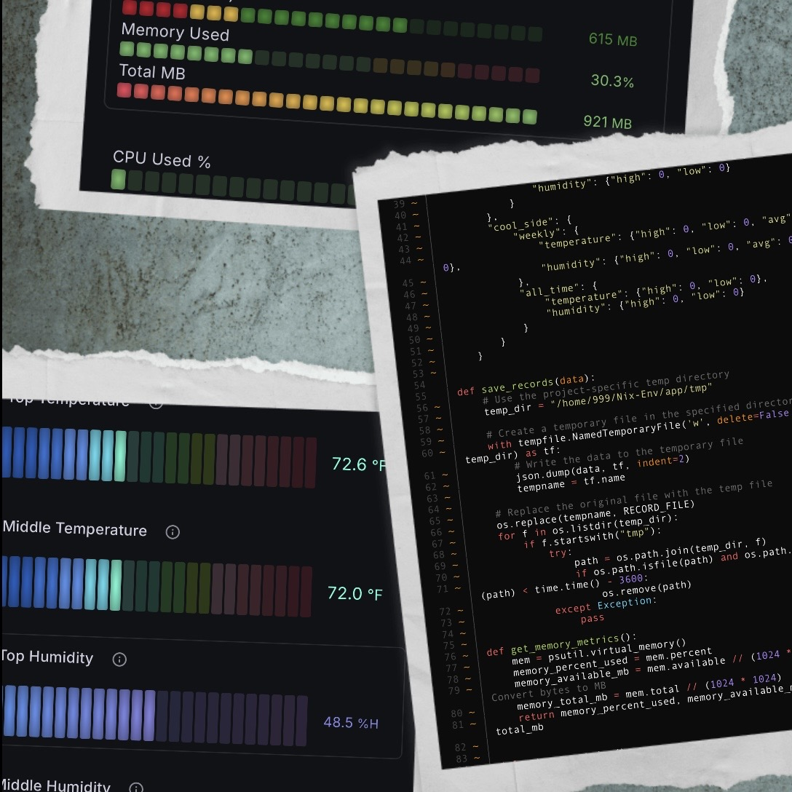
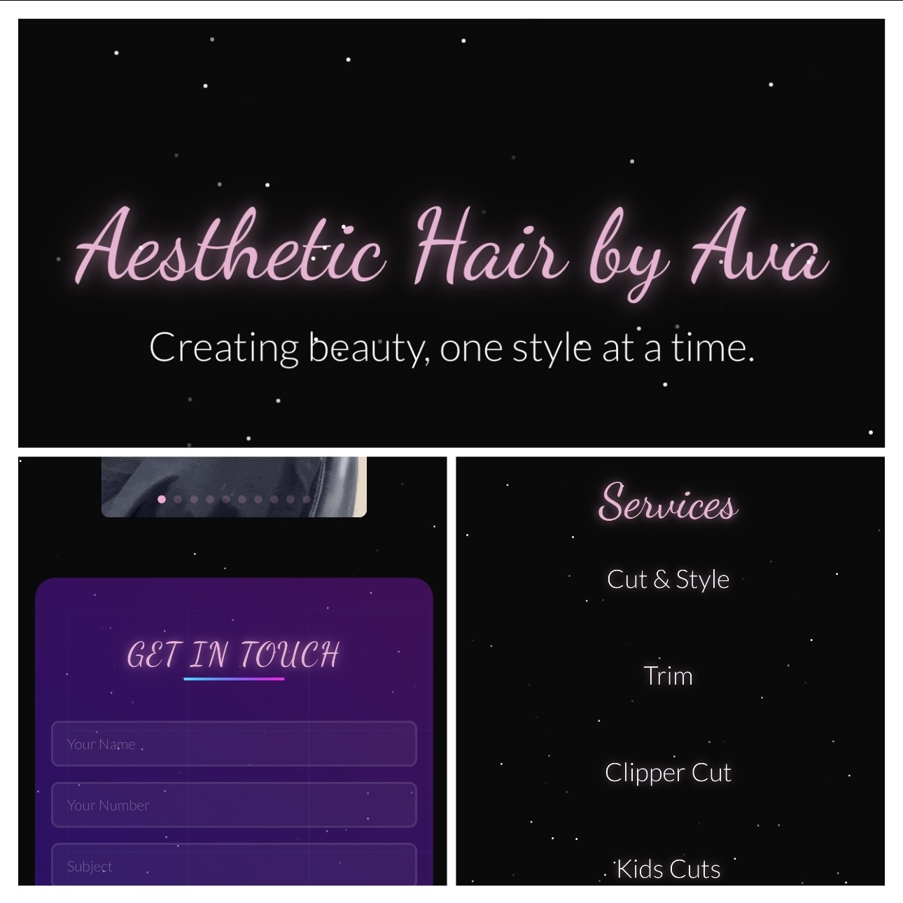
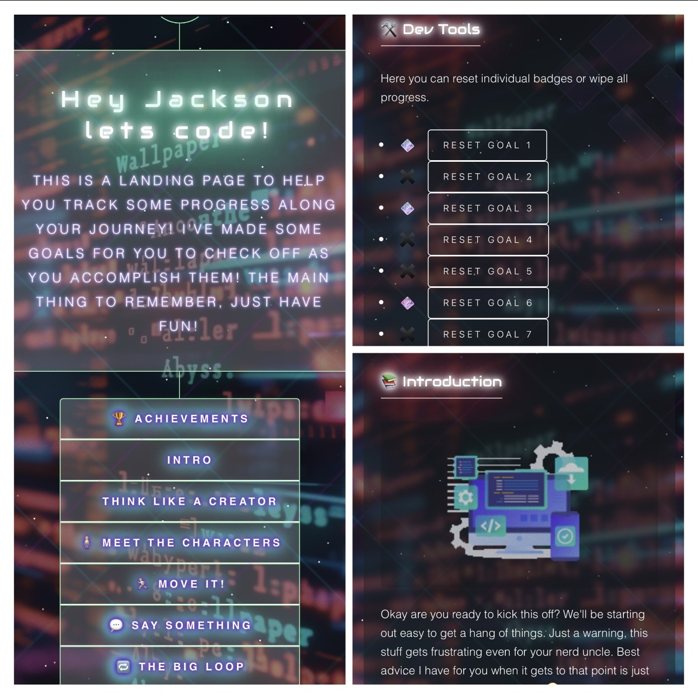
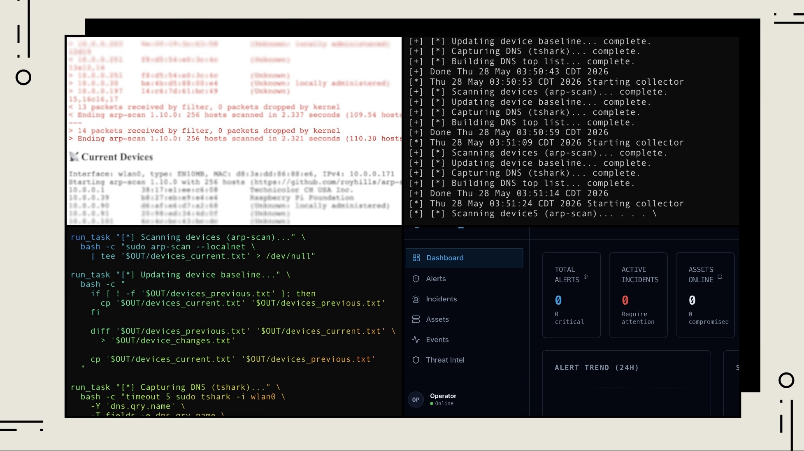

I enjoy learning how systems work from the ground up — whether that’s networks, cybersecurity, hardware, or frontend development. Most of my projects start with curiosity and end with me obsessing over the details.

Engineered an IoT-based environmental monitoring system for a reptile habitat using a Raspberry Pi 3 B+, Python, dual SHT45 sensors, Flask, Prometheus, and Grafana Cloud. The platform collects and visualizes real-time temperature and humidity telemetry, stores historical environmental records for trend analysis, and exposes custom metrics for remote dashboard monitoring.

Designed and developed a modern responsive portfolio website for a hairstylist using React, Vite, Tailwind CSS, and Cloudflare Pages. Built with a minimalist dark-themed aesthetic featuring pastel accent styling, custom typography, service sections, contact functionality, and mobile-friendly layouts. The project focuses on clean UI design, responsive frontend development, and scalable content management for future updates and customization.

Developed an interactive educational app designed to introduce basic programming concepts to children through a simple, tablet-friendly interface. The project focused on creating an engaging learning experience with beginner-friendly logic, interactive elements, and approachable UI design to help teach foundational coding skills in a fun and accessible way.

Built a lightweight SOC-style network monitoring and telemetry dashboard on Raspberry Pi using Bash scripting, arp-scan, tshark, and automated data collection pipelines. The system continuously scans local network devices, tracks baseline changes, captures DNS query activity, and generates live network visibility reports for monitoring and analysis. Designed with a terminal-focused workflow inspired by security operations tooling, featuring automated collection loops, device change detection, DNS traffic aggregation, and structured logging for future dashboard integration and threat monitoring expansion.
Lippert Components
O3 Solutions
Penn Foster
Graduated May 2022
Google • 2024
CompTIA • In Progress
CompTIA • In Progress